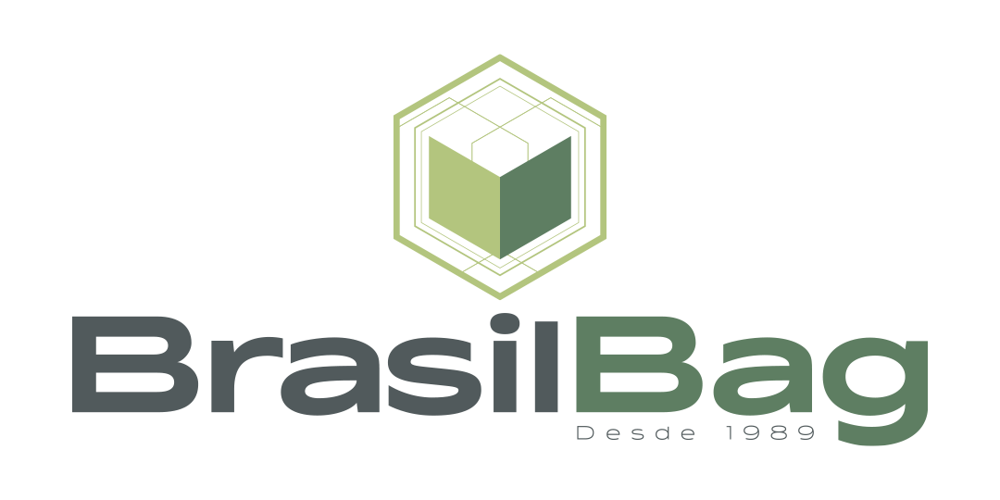

1. O que sao cookies
Cookies sao pequenos arquivos ou registros salvos no navegador para lembrar preferencias, manter funcionalidades e ajudar a entender como o site e usado.

OrcamentoCookies
Ultima atualizacao: 10 de julho de 2026.
Cookies sao pequenos arquivos ou registros salvos no navegador para lembrar preferencias, manter funcionalidades e ajudar a entender como o site e usado.
Voce pode aceitar ou recusar cookies pelo aviso exibido no site. Tambem pode apagar cookies diretamente nas configuracoes do navegador.
Esta politica pode ser atualizada se novas ferramentas, recursos de medicao ou canais digitais forem adicionados ao site.